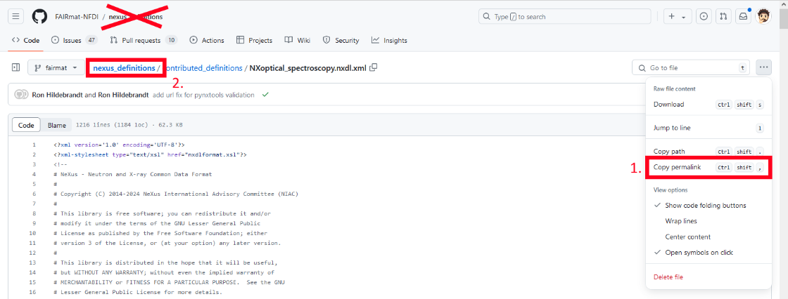
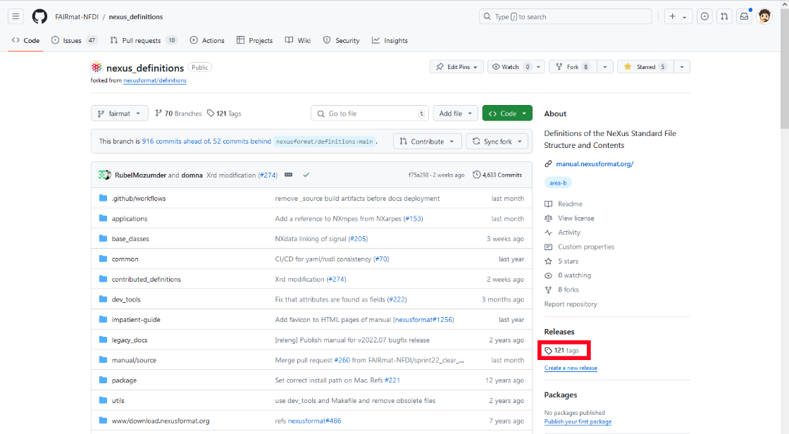

Using Python to create NeXus files¶
In general, we recommend using pynxtools to create NeXus files, which has the inherent advantage that the resulting NeXus file gets automatically validated against the NeXus application definition during conversion.
However, in some cases, it might be simpler to create the NeXus NeXus file (.nxs) directly using Python. For static data structures (i.e., always the same type of standard measurement) or one-time examples (small data publications), this may provide a feasible solution. For large scaled automated file processing, storage, and validation, we strongly recommend using pynxtools and its measurement method specific plugins.
This How-To is intended as easy access to FAIR data structures via NeXus. It will demonstrate how NeXus file can be created in Python using h5py.
You can find all of the data on Zenodo:
Specifically, the Python script for creating a NeXus file can be downloaded here:
Download h5py_nexus_file_creation.py
We will discuss its content below and guide you through step-by-step in creating your NeXus file by hand.
Create a NeXus file through Python and h5py¶
You start by installing h5py via pip:
Next, we create the Python file and fill it with a minimal structure.
# Import h5py, to write an hdf5 file
import h5py
# create a h5py file in writing mode with given name "NXopt_minimal_example", file extension "nxs"
f = h5py.File("NXopt_minimal_example.nxs", "w")
# there are only 3 fundamental objects: >group<, >attribute< and >field<.
# create a >group< called "entry"
f.create_group('/entry')
# assign the >group< called "entry" an >attribute<
# The attribute is "NX_class"(a NeXus class) with the value of this class is "NXentry"
f['/entry'].attrs['NX_class'] = 'NXentry'
# create >field< called "definition" inside the entry, and assign it the value "NXoptical_spectroscopy"
# This field is important, as it is used in validation process to identify the NeXus definition.
f['/entry/definition'] = 'NXoptical_spectroscopy'
This structure is the starting point for our NeXus file. We will go through these functions in the following.
Add NeXus concepts¶
We will create a file according to the NeXus application definition NXoptical_spectroscopy, which provides a generic description for experiments in optical spectroscopy.
On the linked documentation NeXus definitions documentation page, you see a tree-like structure of NXoptical_spectroscopy with several tree nodes: Status, Description, Symbols, Groups_cited, Structure. For now, only the part in Structure is of interest. This contains the information which has to be written in the Python code to add fields/groups/attributes to the NeXus file.
Use your browser search (CTRL+F) and search for "required" to highlight all NeXus concepts which are required. You have to add those to the Python script to extend your created .nxs file. (Which fields/groups/attributes are "required" was defined by the respective scientific community, to ensure that the data serves the FAIR principles.)
In the following, it will be shown how to add three types of fundamental NeXus objects through the Python script:
-
Attribute
-
Field
-
Group
Adding an attribute¶
In the tree structure, the first concept which is not created yet, is the @version attribute:
@version: (required) NX_CHAR ⤆
-
It is located in the tree at
ENTRY/definition/ -
The "@" indicates that this is an attribute of the concept "definition".
-
The name of the attribute is "version".
-
Since it is "required", that means this attribute has to be added so that the resulting NeXus file is compliant with the NeXus definition
NXoptical\_spectroscopy. -
NX\_CHARindicates the datatype. This should be a string: "The preferred string representation is UTF-8" (more information see here)

We add an instance of this concept by adding an HDF5 attribute:
This h5py command adds the attribute named "version" with the value "v2024.02" to the HDF5 dataset called "/entry/definition". The same is done for the URL attribute:
f['/entry/definition'].attrs['URL'] = 'https://github.com/FAIRmat-NFDI/nexus_definitions/blob/f75a29836431f35d68df6174e3868a0418523397/contributed_definitions/NXoptical_spectroscopy.nxdl.xml'
For your use case, you may want to use a different version of the NeXus definitions, since these are changed over time. In the following, it is shown where to obtain the correct version and URL.
Get the values: version and URL
At the time you create the NeXus file, can do the following to find the version and associated URL:
-
Go to the page of the respectively used NeXus concept, i.e. NXoptical_spectroscopy
-
Scroll down until you find "NXDL Source:" and follow this link, i.e. NXoptical_spectroscopy.nxdl.xml
This is the GitHub website, in which the latest (FAIRmat) NeXus definition of NXoptical_spectroscopy is stored in the NeXus definition language file (.nxdl). The information is structured in the xml format.
- Now you have to copy the permalink of this file. Go to the top right side of the website. Find the Menu made by 3 dots:

Copy the permalink and insert it as value for the "URL" attribute (Step 1, Red box in the image)
- Go to "nexus_definitions" (Step 2, Red box in the image)

On the right side, you should see below "Releases" the "tags" (Red box in the image). Follow this link.
- Copy the latest tag, which should look similar to "v2024.02". Insert it as value for the "version" attribute.
Disclaimer
When specifying this version tag, it would be better to include the GitHub commit ID as well. In pynxtools, these are appended automatically. Such a version tag might look like this:
v2022.07.post1.dev1278+g1d7000f4.
If you have pynxtools installed, you can get the tag by:
Adding a field¶
The next required concept of NXoptical_spectroscopy is "experiment_type".
experiment_type: (required) NX_CHAR
-
It is located in the tree at position
ENTRY/ -
There is no "@" in front of "experiment_type". So, this may be a group or a field.
-
The name of this group/field is "experiment_type".
-
The "required" indicates that this group/field has to be added to be in line with the NeXus definition "NXoptical_spectroscopy".
-
NX\_CHARindicates the datatype. This should NXoptical_spectrs be a string (see above). -
The presence of the datatype
NX\_CHARindicates that this is a field. It is NOT a group.
Read the documentation at "▶ Specify the type of the optical experiment. ..." by extending it via click on the triangle symbol. You should see something like this:

There, the value of the field has to be one of the shown list, since it is an enumeration (e.g. "transmission spectroscopy"). Note that this is requires an exact match to one of the enumerated items (case and whitespace sensitive).
Therefore, the Python script has to be extended by:
Adding a group¶
The first required group in NXoptical_spectroscopy on the ENTRY/ level is "INSTRUMENT: (required) NXinstrument ⤆"
-
It is located in the tree at position: NXentry/
-
There is no "@" in front of "INSTRUMENT" and because the
NXinstrumentis a NeXus group, this has to be implemented as an HDF5 group in the Python script. -
The "required" indicates that this group has to be added to be in line with the NeXus definition "NXoptical_spectroscopy".
-
As this is a group, other groups, fields, or attributes may be assigned to it.
-
The uppercase notation of "INSTRUMENT" means:
-
You can give INSTRUMENT almost any name, such as "abc" or "Raman_setup" (see "regex" or regular expression).
-
You can create as many groups with the class
NXinstrumentas you want. Their names have to be different. -
For more information, see the NeXus rules
-
The Python code to implement the NXinstrument group as an HDF5 group named with the name "experiment_setup_1" is:
f.create_group('/entry/experiment_setup_1')
f['/entry/experiment_setup_1'].attrs['NX_class'] = 'NXinstrument'
The first line creates the group with the name "experiment_setup_1".
The second line assigns this group the attribute with the name "NX_class" and its value "NXinstrument".
Finishing the NeXus file¶
Afterwards, we repeat the process for all required NeXus groups/fields/attributes defined in NXoptical_spectroscopy.
The next required entries are located inside the NXinstrument class:
-
detector_TYPE: (required) NXdetector ⤆
Both are groups. "beam_TYPE" could be named: "beam_abc" or "beam_Raman_setup". Use the knowledge above to extend the Python script to create those NeXus file entries.
Note that you can also add instances for recommended or optional concepts to the file by using the same Python functionality as above. The difference to the required concept is that they have to be present in order for the file to comply with the application definitions, whereas recommended/optional files can, but don't need to be present.
What's next?¶
- Once you have a finished NeXus file, you may continue by validating the NeXus file.
- If you find yourself in the situation that you need to run such Python code routinely to convert your data, we strongly recommend creating your own reader or plugin in the
pynxtoolsecosystem. You can find a how-to guide to get you started here.